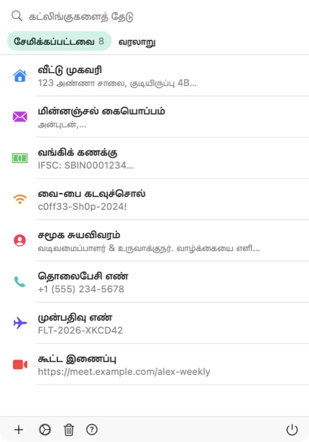

உங்கள் கிளிப்போர்டு ஒரே ஒரு விசைப்பலகை குறுக்குவழி தூரத்தில். கட்லிங்கு மெனு பட்டியில் அமைதியாக இருந்து, உங்கள் கர்சர் எங்கிருக்கிறதோ அங்கேயே தோன்றும். வேலையின் ஓட்டத்தைக் குலைக்காமல், சேமித்த துணுக்கை எந்த ஆப்பிலும் சேர்த்துக்கொள்ளலாம்.

Dock-ஐ ஆக்கிரமிக்காமல், உங்கள் வழியில் குறுக்கிடாமல், கட்லிங்கு மெனு பட்டியில் அமைதியாக இருக்கும். ஐகானைக் கிளிக் செய்தால் சேமித்த கட்லிங்குகளும் சமீபத்திய கிளிப்போர்டு வரலாறும் தெரியும்.
எந்த ஆப்பிலிருந்தும் உங்கள் குறுக்குவழியை அழுத்தினால், கர்சர் இருக்கும் இடத்திலேயே ஒரு மிதக்கும் தேர்வி திறக்கும். அமைப்புகளில் அதை வேறு எந்த விசைச் சேர்க்கைக்கும் மாற்றிக்கொள்ளலாம்.
நீங்கள் தேர்ந்தெடுத்த கட்லிங்கை, பயன்படுத்திக்கொண்டிருந்த ஆப்பிலேயே கட்லிங்கு ஒட்ட அனுமதிக்கலாம். இயல்பாக இது நிறுத்தப்பட்டிருக்கும்; இயக்குவதும் இயக்காததும் உங்கள் விருப்பம்.
நீங்கள் நகலெடுக்கும் அனைத்தும் தானாகவே பிடிக்கப்படும், எதுவும் தொலைந்துபோகாது. வைத்துக்கொள்ள வேண்டியவற்றை ஒரே கிளிக்கில் சேமித்துக்கொள்ளலாம்.
iCloud ஐ இயக்கினால், சேமித்த கட்லிங்குகள் iPhone, iPad, Mac எல்லாவற்றிலும் ஒரே நிலையில் இருக்கும். விருப்பத்தேர்வு, முற்றிலும் தனிப்பட்டது.
கணக்குகள் இல்லை, பகுப்பாய்வு இல்லை, கண்காணிப்பு இல்லை. உங்கள் கிளிப்போர்டு உங்கள் Mac-இலேயே இருக்கும்; ஒத்திசைவை இயக்கினால் உங்கள் சொந்த iCloud-இல் இருக்கும்.
Mac-க்கான கட்லிங்கைப் பதிவிறக்கிக்கொள்ளுங்கள். மீண்டும் மீண்டும் பயன்படுத்துபவை எல்லாம் ஒரே குறுக்குவழி தூரத்தில் இருக்கும்.